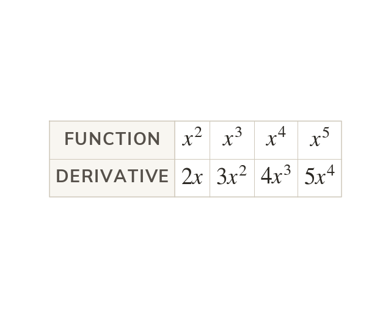
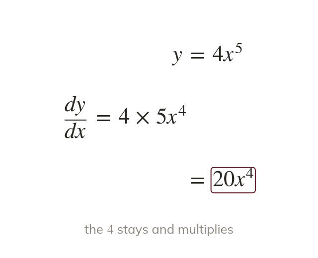
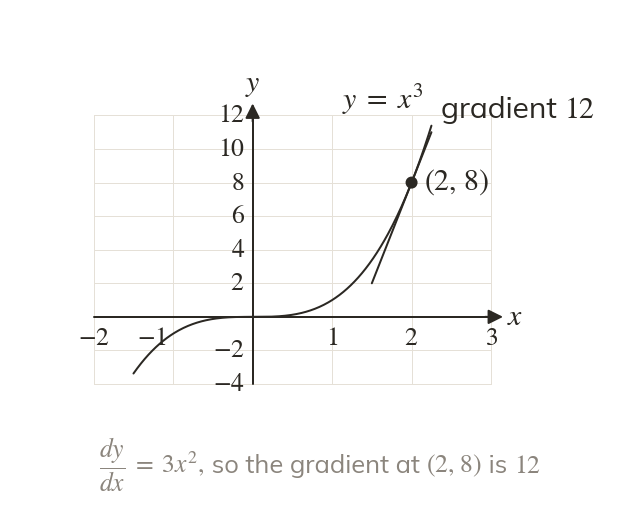
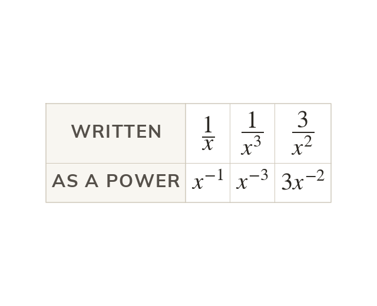
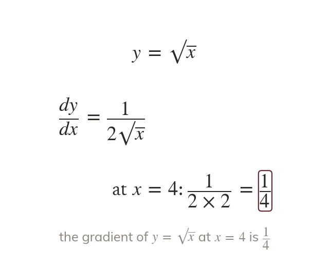
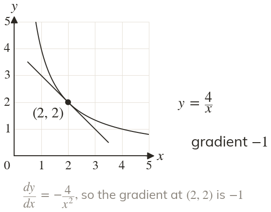

Bring the power down
The first-principles results follow one pattern. If then
Multiply by the power, then reduce the power by one.
Every derivative so far came from a first-principles limit. The pattern in them, bring the power down and reduce it by one, gives the rule for for any rational and every later lesson in this chapter uses it.
Work down the page at your own pace. Write every answer in your book first, then click to check it.
Read each card, then follow the worked examples one step at a time.

The first-principles results follow one pattern. If then
Multiply by the power, then reduce the power by one.

If then so the constant multiplies the answer. A constant on its own has derivative because its graph is flat.

Substitute the x-coordinate into , not into For at the gradient is
Pick an answer. If it's wrong, the feedback tells you which mistake it was.
Write the blanks in your book first, then tap each one to check.
Read each card, then follow the worked examples one step at a time.

The rule needs so a reciprocal is rewritten with a negative power before differentiating. , and

and so the same rule applies. For , which is

is so
At the gradient is and it is negative at every point.
Pick an answer. If it's wrong, the feedback tells you which mistake it was.
Write the blanks in your book first, then tap each one to check.
Finished? Next lesson: 12.P12.4 Differentiating Functions with Several Terms.
For each skill, tap the one that is true for you today. Your Revise pages start with anything you mark Not yet.
Your ratings are saved on this device only.
Log in, then search for a code to practise that skill.